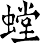

Kung Fu
Il significato
L'ideogramma della parola Kung Fu, in cinese, può assumere diversi significati:
- Duro lavoro
- Grande Fratica
- Uomo lavoratore
- Volontà
- Sudore
- Sacrificio
- Potente Tigre
- Potente Uomo
Nessuna di queste indica in modo specifico l'arte marziale. Quindi prima che questa parola diventasse nota e conosciuta, fare del Kung Fu poteva significare, per una persona cinese, andare a lavorare nei campi, andare a lavorare in miniera; fare una qualsiasi attività che comportasse fatica. Infatti la parola Kung Fu non ha una storia antica e il termine inteso come arte marziale risale ai primi del 1900. Nel termine "Kung Fu" non troviamo quindi un nome, ma una indicazione che ci serve per capire il modo di praticare l'arte marziale. Questo ci viene già insegnato dall'analisi dell'ideogramma, il quale vuol dire che la pratica del Kung Fu è duro lavoro e non può essere imparata senza fatica e senza impegno.
Il Kung Fu nella scuola
programma di studio del Kung Fu della Scuola delle 9 Armonie Conselve è diviso in: Programma di studio Base e Intermedio. Il piano di studio è così strutturato per offrire inizialmente una buona preparazione per lo studio del Kung Fu e offrire una visione di base degli stili praticati dalla Scuola. Successivamente, tramite il programma di studio Intermedio, l'allievo otterrà una visione approfondita dei vari stili della Scuola e otterrà una preparazione adeguata per intraprendere lo studio di un programma avanzato (diventando allievo diretto del Maestro). Alla fine di ogni grado l'allievo dovrà sostenere un esame per dimostrare di aver ottenuto una comprensione adeguata del grado che ha studiato e poter iniziare lo studio del grado successivo. Lo studio del programma potrà inoltre essere integrato tramite la partecipazione dell'allievo allo svolgimento di stage svolti nel corso dell'anno i quali riguardano lo studio di forme o concetti non presenti nel programma di studio Base e Intermedio. Di seguito sono presentati gli stili praticati e le forme presenti nel piano di studio Base e Intermedio.
Stili Praticati
- Fut-Gar
- Wing-Chun
-  Tang-Lang
- Siu-Lam-Jow
- Hung-Gar
- Hop-Gar tibetano
- Choy-Ley-Fut
- C'ha-kung-p'o antico
Piano di studio base
- Hop-Gar Mah Kuen - "Forma delle Posizioni"
- Wing-Chun Siu-Lim-Tao Kuen - "Forma del Piccolo Pensiero"
- Siu-Lam-Jow Pao Kuen - "Forma del Leopardo"
- Hung-Gar Moy-Fah Kuen - "Forma del Fiore di Loto"
- Tang-Lang Bak-Yune-Tao-To Kuen - "Forma della Scimmia Bianca che raccoglie la Pesca"
- Choy-Ley-Fut C'hi Kuen - "Forma base per l'Energia"
Piano di studio intermedio
- Hung-Gar Tuet-Jin-Jeong Kuen - "Forma della Mano a Freccia"
- Choy-Ley-Fut Siu-Lam-Gwan Kuen - "Forma del Bastone di Shaolin"
- Hop-Gar Key-Bong Kuen - "Forma del Passo Fondamentale dello Stile"
- Tang-Lang Bong-Bo Kuen - "Forma del Passo Pestato"
- Fut-Gar Pao Kuen - "Forma del Leopardo"
- Siu-Lam-Jow Lo-Han-Sap-Zih-Jeong Kuen - "Forma dei 10 Palmi Mortali di Buddha"
- Wing-Chun Cham-Kiu Kuen - "Forma per Cercare il Ponte"
- Hung-Gar Hong-Ta-Bat-Gwan Kuen - "Forma del Bastone del Re Scimmia"
- Choy-Ley-Fut Chat-Soh-Siu-Sap-Jee-Jeong Kuen - "Forma della Piccola Croce"
- Hop-Gar Tong-Long-Ti-Hay-Lo Kuen - "Forma della Prima Mantide"
- Tang-Lang Darn-Dao Kuen - "Forma della Sciabola"
- Fut-Gar Fu Kuen - "Forma della Tigre"
- Siu-Lam-Jow Siu-Dih-Zih-Gwan Kuen - "Forma del Piccolo Flauto Assassino (Mortale)"
- Iron Jeong - "Esercizio del Palmo di Ferro (1° fase)"